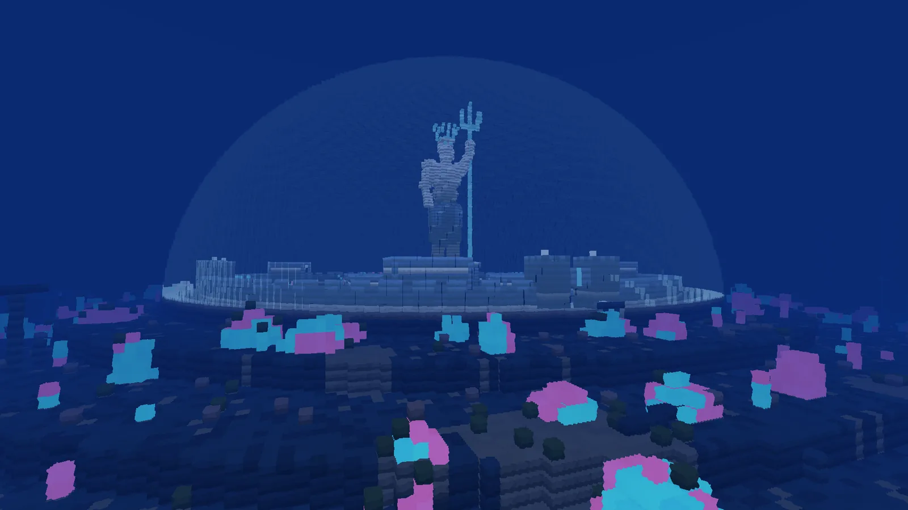
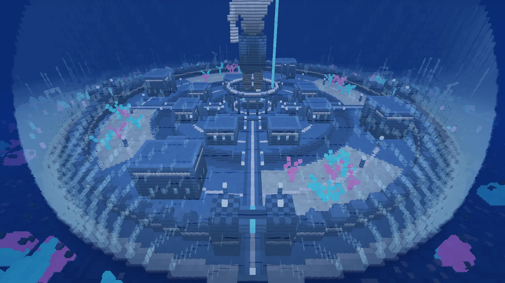
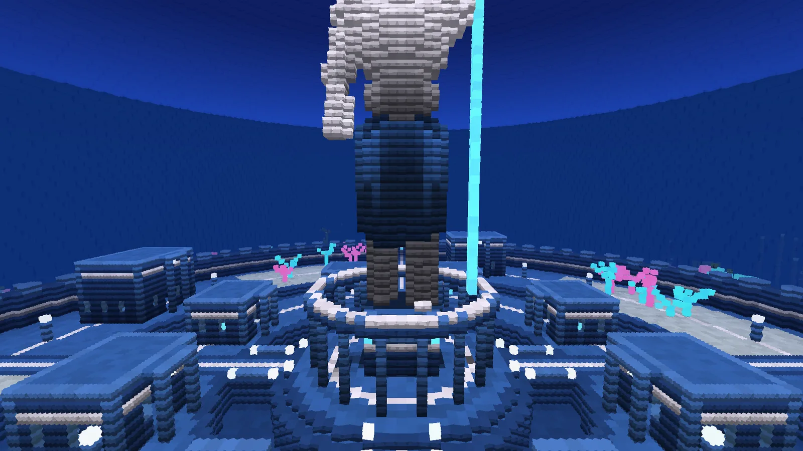
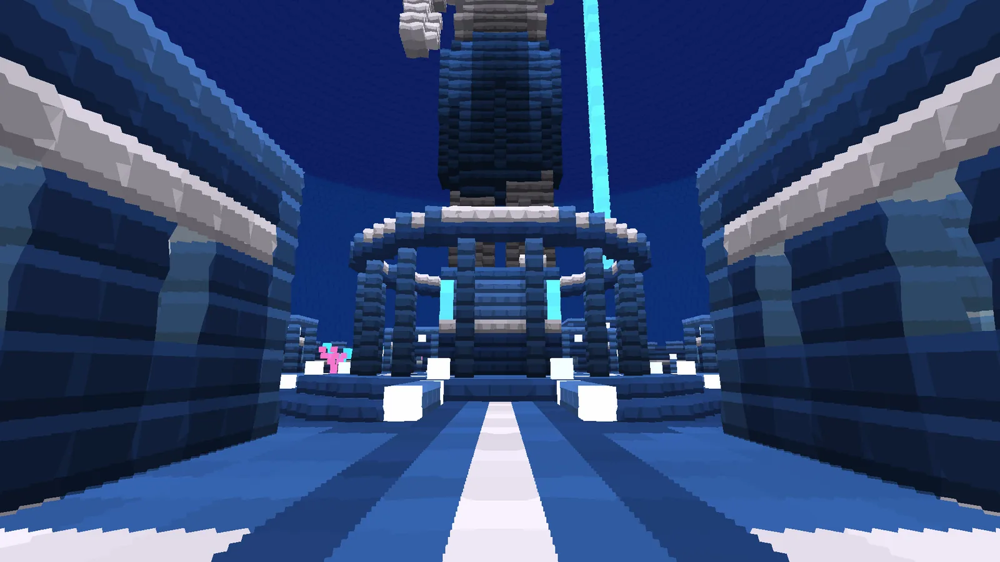
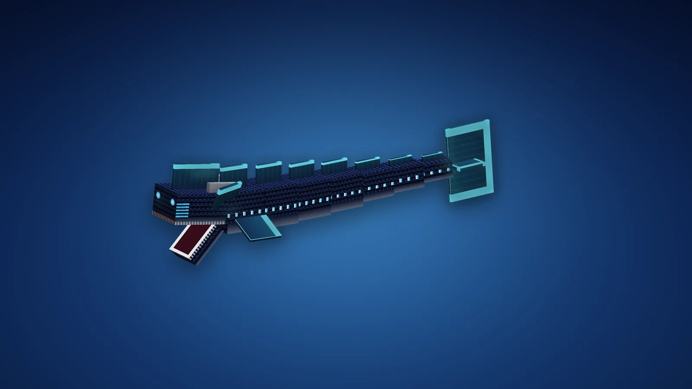
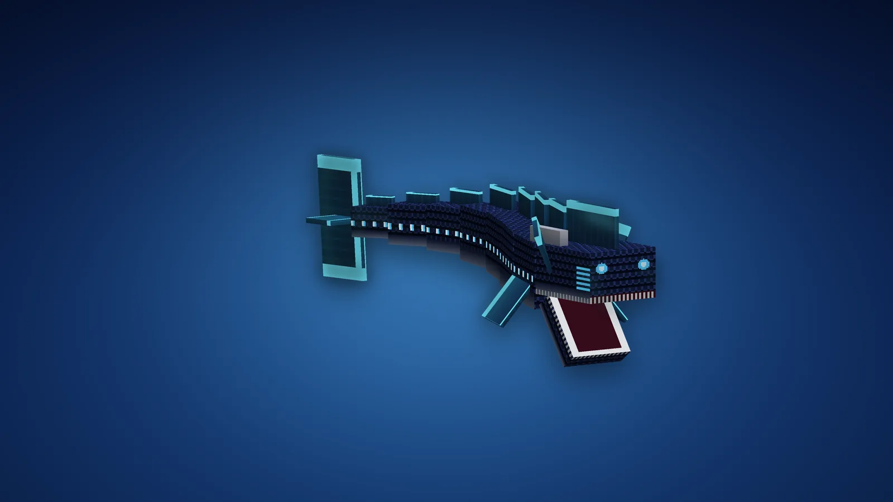
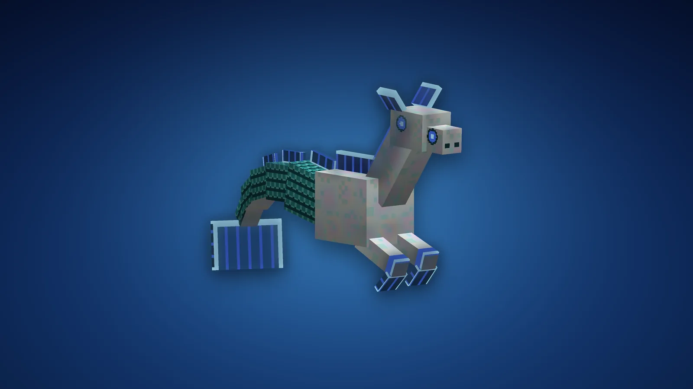
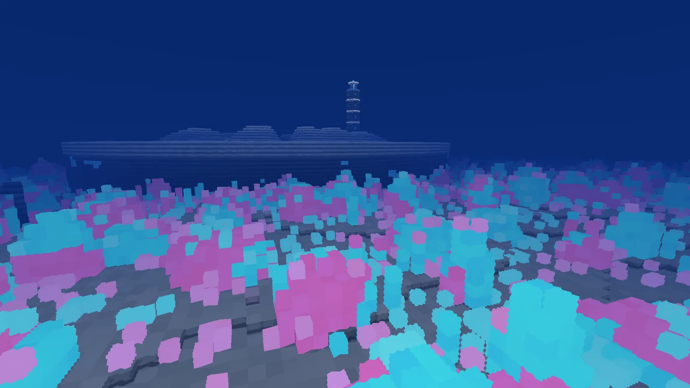
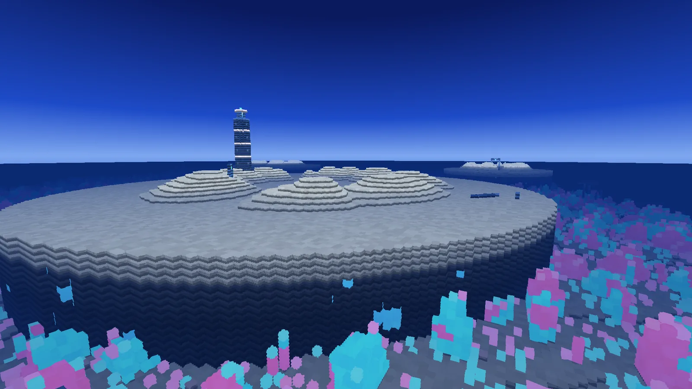
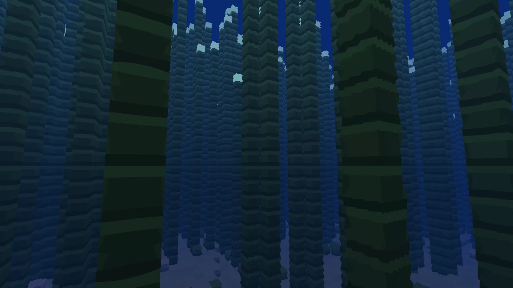

Planète
Neptune, le royaume de Poséidon
La quatrième planète des dieux, et la seule où l'on vit sous la mer. La touche divine de Neptune ouvre la Voie de Neptune : un océan de 2000 blocs, profond de soixante, sous un ciel d'azur strié de nuages blancs où Triton brille en plein jour. Au fond, au milieu, l'Atlantide - la vraie, celle que Platon décrit - sous un dôme de verre dont le sommet crève la surface.


(agrandir l'image)

(agrandir l'image)

(agrandir l'image)

(agrandir l'image)Le voyage
- Les mêmes règles que pour les autres planètes : une fois par jour de jeu, cinq minutes au plus, le compte à rebours en haut à gauche, les invités par [Rejoindre], la touche divine pour rentrer plus tôt.
- On y respire l'eau (le Souffle de Neptune) : tant que vous êtes sur la planète, rien ne vous noie. L'effet s'éteint quelques secondes après le départ.
- On y pèse un peu plus que sur Terre (1,12), comme sur la vraie Neptune ; sous l'eau, cela ne se sent pas.
- L'arrivée : dans l'Atlantide, sur l'avenue du nord, face au pont et au temple de Poséidon.
- Sortir du dôme : par l'une des quatre portes, au bout des quatre avenues. L'eau ne passe pas une porte, ouverte ou fermée : la mer reste dehors. Casser le verre du dôme, en revanche, l'inonde.
La planète
Elle est la même dans tous les mondes. La mer y monte jusqu'à Y 150 ; on voit loin sous l'eau (140 blocs), et dans le noir du fond ce sont les coraux, le varech et les lanternes qui éclairent.
| Lieu | Où (x, z) | Ce qu'on y trouve |
|---|---|---|
| L'Atlantide | 0, 0 (Y 109) | L'arrivée, au sec sous le dôme. Une île centrale, deux anneaux d'eau et deux de terre, comme chez Platon ; quatre avenues pavées de nacre, des ponts à lanternes. Au milieu, le temple de Poséidon : seize colonnes autour de sa statue de 48 blocs, en nacre, couronnée de rayons de thalassite, le trident levé qui illumine le dôme. Des maisons à colonnes et à fenêtres éclairées, des halles, des jardins de corail, un rempart à quatre portes |
| Les Terrasses englouties | autour du dôme | Ce que le dôme n'a pas sauvé : quatre gradins de dallage brisé descendant vers le fond, ensablés, envahis de jardins de corail - et les bénitiers géants, nombreux ici |
| Le Récif de Thétis | 430, -390 | Un plateau peu profond couvert de têtes de corail azur et rose qui luisent, de gorgones ; trois atolls crèvent la surface, avec leur lagon. Sur le plus grand (390, -470), un phare de nacre et de pierre, sa lanterne de thalassite visible de loin |
| La Forêt de varech | -480, 70 | Des tiges de varech géant du fond jusqu'à la surface, couronnées de bulbes de lumière : une cathédrale verte |
| La Grande Tache sombre | 440, 430 | Un tourbillon changé en pierre : un entonnoir de basalte noir de 500 blocs, à trois bras en spirale, qui descend jusqu'à Y 28. Au fond, une forêt d'évents hydrothermaux et le minerai de thalassite le plus riche de la planète |
| Le Colosse | -150, 540 | La tête d'une statue tombée, aussi grande que la statue entière de la ville, couchée face au ciel sur le sable ; ses yeux et sa couronne de thalassite luisent encore. Son trident est planté de biais dans le fond, tout près |
| Les ruines | partout | Colonnades, colonnes tombées, fondations de maisons à dallage de nacre, arches : surtout autour de l'Atlantide |
| La Chaussée | le bord | Une couronne de colonnes de basalte hexagonales, chacune à sa hauteur, qui enferme la mer |
Les créatures
Deux, et elles seules, toujours dans l'eau : la planète les fait venir autour de chaque visiteur - en créatif aussi - jamais sous le dôme ni dans ses canaux. Quatre Léviathans et douze hippocampes au plus, aucun en Paisible.

(agrandir l'image)
(agrandir l'image)Léviathan
- Vie
- 90
- Dégâts
- 10 (morsure)
Le serpent des abysses : neuf blocs d'écailles bleu-noir, une tête cornue à collerettes, une rangée de lumières le long des flancs. Il chasse qui nage : il monte des profondeurs dans un nuage de bulles, et de loin il charge en ligne droite, gueule ouverte. Ce qu'il mord, il l'enserre : Lenteur II et Faiblesse 4 secondes. Hors de l'eau il ne suit pas, et finit par s'asphyxier. Il laisse en paix qui porte toute la Panoplie de Triton, tant qu'on ne le frappe pas.
Butin 2 à 4 thalassites brutes

(agrandir l'image)Hippocampe
- Vie
- 40
- Dégâts
- -
Le coursier du dieu : l'avant d'un cheval nacré, une crinière de nageoires, une queue de poisson. Ils vont par deux ou trois et fuient qui les frappe. Un bulbe de varech tendu en attire un ; donné, un sur trois l'apprivoise. Il est alors à vous : clic droit pour le monter, et il va où vous regardez - regardez vers le bas pour plonger, vers le haut pour remonter -, plus vite que tout dans la mer. Sur terre, il marche, lentement. Un bulbe le soigne. Il ne disparaît plus.
Butin 0 à 1 thalassite brute, 0 à 2 bulbes


Le Butin augmente la thalassite. Tués par un joueur, ils ont aussi 5 % de chances de laisser une Cuirasse d'écailles ou des Palmes de Triton : c'est la seule façon de les avoir.
La thalassite, et le bénitier géant
Le minerai de thalassite court en veines bleues dans la roche abyssale et le basalte, plus riche dans la Grande Tache. Il donne de la thalassite brute, qui ne vaut rien ainsi : elle ne se cuit pas. Il faut la confier à un bénitier géant, sous l'eau : clic droit sur un bénitier ouvert, jusqu'à 8 à la fois ; la coquille se referme, et 20 secondes plus tard elle se rouvre sur une perle de lumière. Clic droit : toute la thalassite en ressort nacrée. Un bénitier se ramasse à la pioche et marche partout où on le pose dans l'eau - chez vous aussi. Hors de l'eau, il reste ouvert et ne fait rien.
Les blocs
| Bloc | Où | Outil |
|---|---|---|
| Sable abyssal | Le fond, partout ; se cuit en verre marin. Ne tombe pas | Pelle |
| Roche abyssale, Basalte neptunien | Sous le sable ; la Tache, le bord et les profondeurs | Pioche |
| Minerai de thalassite | Dans la roche et le basalte. Il brille | Pioche en fer |
| Corail azur, Corail rose | Le Récif, les terrasses, les jardins de la ville. Lumière 10, les polypes scintillent | Pioche |
| Gorgone azur, Gorgone rose, Posidonie | Le Récif ; les prairies de la plaine. Ne poussent que dans l'eau | À la main |
| Varech géant, Couronne de varech | La Forêt. La couronne luit et donne 1 à 2 bulbes (plus avec la Fortune), elle-même aux cisailles | À la main |
| Bénitier géant | Les terrasses, le Récif, la plaine. Nacre la thalassite | Pioche |
| Évent hydrothermal | La Tache et la plaine, au sommet de cheminées de basalte. Crache des bulles ; brûle qui marche dessus | Pioche |
| Pierre d'Atlantide, polie, briques, escalier, dalle, muret, sculptée (le trident), colonne | La ville et les ruines ; artisanat ou tailleur de pierre | Pioche |
| Bloc de nacre | Ses couleurs bougent avec la lumière. 8 pierres d'Atlantide autour d'une thalassite nacrée | Pioche |
| Bloc de thalassite | 9 thalassites nacrées ; base de balise ; lumière 12 | Pioche en fer |
| Verre marin | Le dôme. Du sable abyssal cuit. Dur comme la pierre | Pioche |
| Lanterne-méduse | Une méduse de lumière sous une cloche de verre ; marche dans l'eau comme à l'air. Lumière maximale | Pioche |
| Porte d'Atlantide | Nacre, hublot de verre marin. L'eau ne la traverse jamais : de quoi bâtir sous la mer | Pioche |
La Panoplie de Triton
Triton, fils de Poséidon. Des écailles bleu profond en rangs, bordées de nacre, la thalassite là où quelque chose brille. Le heaume porte une crête de nageoire et deux nageoires pour oreilles, une visière de nacre où luit une fente d'azur ; la cuirasse a deux coquilles Saint-Jacques pour épaulières, une ligne de lumière sur la poitrine et une nageoire le long du dos ; les jambières, une coquille à chaque genou ; et les palmes ont, sous chaque pied, une grande nageoire qui bat quand on avance.
| Pièce | Armure | Durabilité | Comment l'avoir |
|---|---|---|---|
| Heaume de Triton | 3 | 407 | Artisanat : 5 thalassites nacrées, en casque |
| Cuirasse d'écailles de Triton | 8 | 592 | Butin des créatures de Neptune : aucune recette |
| Jambières de Triton | 6 | 555 | Artisanat : 7 thalassites nacrées, en jambières |
| Palmes de Triton | 3 | 481 | Butin des créatures de Neptune : aucune recette |
Chaque pièce : robustesse 3, résistance au recul 10 %, très enchantable (20), réparable à la thalassite nacrée. Les quatre portées ensemble : dans l'eau vous nagez comme un dauphin, vous voyez dans les abysses et vous y minez aussi vite qu'à l'air libre ; rien ne vous noie ; les Léviathans vous laissent en paix tant que vous ne frappez pas. Dans l'eau, sous la pluie et 20 secondes après : +20 % de dégâts et régénération.
L'Ancre de Neptune, et le reste
Ancre de Neptune
L'arme la plus lourde qui soit : 11 dégâts, lente, un fort recul, 2200 de durabilité. Clic droit : le Maelström. L'ancre frappe là où vous regardez (24 blocs) et la mer se met à tourner quatre secondes : tout ce qui est hostile à 9 blocs est aspiré vers l'œil du tourbillon et entraîné vers le fond, 3 dégâts chaque demi-seconde. Hors de l'eau, c'est une trombe : 6 blocs, et elle soulève ce qu'elle prend. 9 secondes de recharge. Ni joueurs ni animaux apprivoisés ne sont touchés.
Lanterne-méduse
Lumière 15, dans l'eau comme à l'air.
Porte d'Atlantide
Une porte que l'eau ne franchit pas : la clé pour bâtir sous la mer, avec le verre marin.
Bulbe de varech : se mange (3 de nourriture), donne une minute de vision nocturne et de respiration aquatique - hors de Neptune aussi - et sert à apprivoiser et soigner les hippocampes.
Toute la galerie 3 images de plus


(agrandir l'image)

(agrandir l'image)

(agrandir l'image)